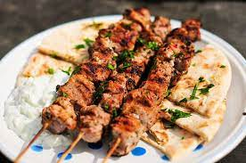

Pork Souvlaki

Beautiful bite-sized pork pieces placed over creamy white tzaziki sauce. This Mediterranean dish is a symbol of Greek cuisine.
Grilled over a hot barbecue on skewers that draw out the special flavor of the spices and red onion to create a unique pork
taste you'll never forget!
This recipe is very simple and easy to make. You'll need no more than a grill, skewers, and a serving tray!
----- Ingredients:
- Pork Tenderloin
- Oregano
- Rosemary
- Salt and Pepper
- Minced garlic
- Paprika/chili powder
- White vinegar
- Red Onion
- Tzaziki Sauce
----- Cooking Steps:
- Create the Marinade, using all seasonings excluding Tzaziki Sauce and Red Onion. You'll want about a teaspoon for each, with roughly 4 cloves of minced garlic.
- Cut the pork into bite-sized pieces and toss it in the marinade. Let this rerigerate for at least 2 hours.
- Skewer your pork along with individual pieces of a quartered red onion. I like to use a pattern of 2 pork pieces, then an onion.
- Barbecue the pork until browned and charred, flipping several times. Should take roughly 15-20 minutes.
- Let stand for about 5 minutes, give a garnish of Oregano and squeezed lemon, and serve!
credits --
back to recipes page